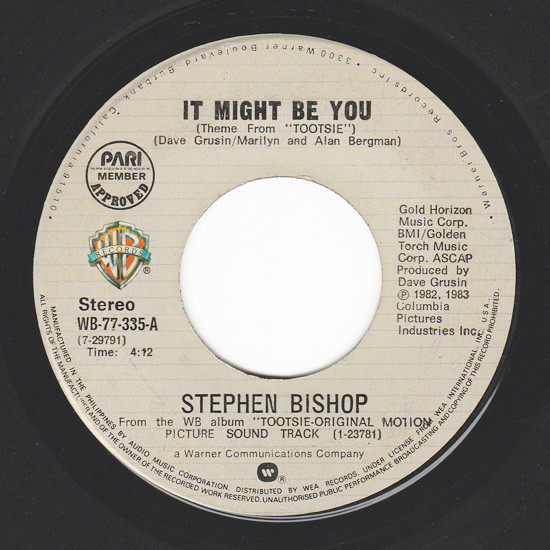

by You
Happy happy happyy 21st Birthday, Jamess!! I actually don't know din kung paano ko sisimulan itong letter ko tungkol sa'yo
but idk how many hours I spent making this website just for you kasi request mo huhu and figuring out paano maging mobile friendly
yung outcome kasi puro sa desktop naman lagi inoopen yung mga website na ginagawa namin pero this website actually help me rin in reviewing for midterms HAHWAHSAHA kasi . Anyways, I want na yung website is about you,
hindi lang puro about "us", kasi birthday mo, hindi naman natin monthsarry, anniv or whatsoever, this day is all about you, my pretty boy.
I want to make this day very very special for you kasi debut 'yan sa guy eh so I want you to feel the happiest todayyy. Sabi nila diba sa mga bagay
lumalabas ang isang gamit kung kailan hindi mo na hinahanap pero kailangan mo parin at some point, at para sa akin ikaw 'yon, hindi ako naghahanap ng
nobyo o kasintahan noong dumating ka sa buhay ko, at sobrang unti ng porsiyento na magkaroon tayo ng interaksyon pero gumawa ng paraan ang Diyos para magkakilala
at magkita tayo. Sa totoo lang, ayokong tinatawag na "Reto" yung sa atin sa tuwing tinatanong nila kung paano tayo nagkakilala or what, lagi kong sinasabi "Friend of a friend",
tapos kapag sinasabi nila na "ah reto?" umiiling ako kasi ewan hindi ko siya ma-count as reto? ah basta. And also kaya 'yan din yung kanta na naaalala ko or more like a song dedicated to you,
like nung napakinggan ko 'yan ulit nung magkasama na tayo, naisip ko kaagad na "I want to dedicate this to him" kaya ayan yung ginamit kong kanta nung "hinard launch" kuno na kita sa ig ko HAHAHAHAH idk if maalala mo.
PLSZ SANA HINDI MO MA-FIND NA CRINGE 'TO EVENTUALLY HUHU, I mean itong overall website and letter huhu, baka kasi po ma-realize mo soon na "ang jejemon naman, ang cringe" and such (╥‸╥) iyak aq iyan.
I cannot put into words nang maayos lahat ng gusto kong sabihin sa'yo kasi I feel so grateful, thankful, and happy na nakilala kita. Nasabi ko sa'yo diba
na hindi naman acts of service ang top love language ko pero simula nung nakilala kita patuloy ko siyang hinahanap hanap mula sa'yo, even small gestures matter,
kaya nagtatampo ako minsan kapag hindi mo nagagawa sakin HAHAHAHAHA hehe sensya na, pero ayon hindi ko ma-imagine na I would fall for acts of service na love language,
akala ko mag-stick na ako sa quality time and physical touch na love language ko pero you introduced them to me, like pinaramdam mo yug iba sa akin, the words of affirmation, giving gifts, and acts of service.
I know that these actions are simple gestures lang and actually bare minmum or what basta super love and na-appreciate ko siya, na ginagawa mo 'yun sa akin.
From the way you open the drinks muna for me before ko inumin or pagsalin nito mismo sa baso, sa pagbuhat ng bag ko (na ayaw ko pa nung una kasi nagpabebe ako syempre kaya ko naman eh, pero sana pati pagbubukas ng pinto hidi mo na makalimutan (｡•̀ ⤙ •́ ｡ꐦ) !!!)
sa paghatid and sundo sa akin hangga't makakaya mo, sa pagbibigay sa akin ng mga food na alam mong kailangan ko at makakahelp sa akin like yung food na binibigay mo sa akin every time na alam mong mahaba byahe at pagod ako
and yung chocolates na alam mong kailangan ko, dagdag mo pa yung hindi mo ako hinahayaan magbitbit ng kahit na ano huhu kasi super nagi-guilty na talaga ako or nahihiya kasi bitbit mo lahat ng gamit ko madalas tapos mabibigat pa
tapos ako wala akong bitbit na kahit na ano. Nakakainis talaga sobrang emotional ko sa lahat ng bagay, tamo naiiyak ako habang tinatype ko 'to sa pang-code ko na application.
I hope that lahat ng actions na 'yan is maranasan ko sa'yo hanggang sa mamatay ako (oa), I mean hindi siya mawala ganon at patuloy ko parin na maranasan at maramdaman po.
James, thank you so much for all of the things na ginagawa mo sa akin, at mga ipinaparamdam mo. From the smallest to grand gestures, I am very thankful to every bit of it.
Thank you for understanding me kahit sobrang hirap kong intindihin(which is nag didisagree ka naman sa lahat na ganyan kapag sinasabi kong mahirap akong maintindihan at mahalin),
BAKIT BA ANDAMI Q SIDE COMMENTS JUSKO SORRY WHASHAHAHA KAINEZZ. Anyways, thank you for showing up in every way possible especially kapag kailangan talaga kita.
Thank you sa walang sawang pag-eencourage sa akin sa punto ng buhay ko na gustong gusto ko nang sumuko at lumbay na lumbay na talaga ako, kaya sinasabi ko talaga kay jannelle na ang laki ng role mo sa buhay ko
kasi you always help me na bumangon whenever nahihirapan ako, kasi hindi naman na ako lumalapit sa mga friends ko whenever ganiyan ako kasi syempre may struggles din naman sila, kaya diyaan naiinggit si jannelle at raine eme.
Salamat kasi pinipili mong habaan lalo yung pasensya mo pagdating sa akin at inaassure mo ako na hindi ka galit, na kalmado yung pakikipag usap mo sa akin sa chat lagi kapag may hindi tayo pagkakaunawaan.
At higit sa lahat, thank you for existing, and keep on living.
Because something's telling me it might be you, James.